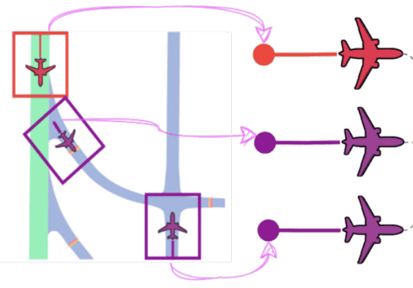
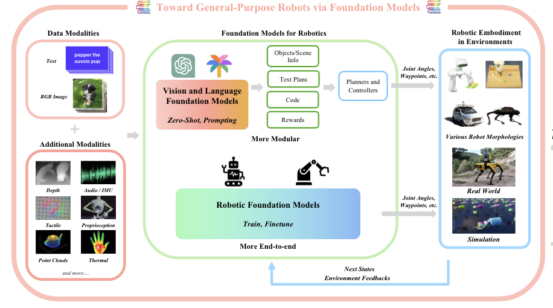
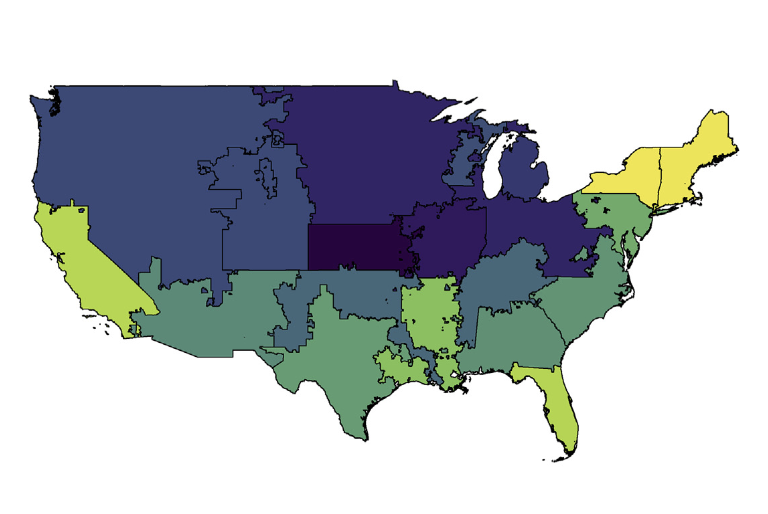
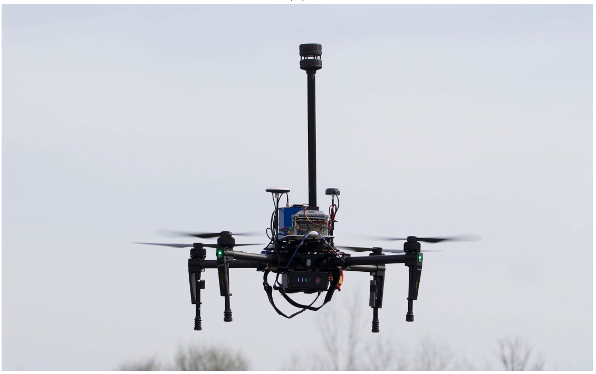
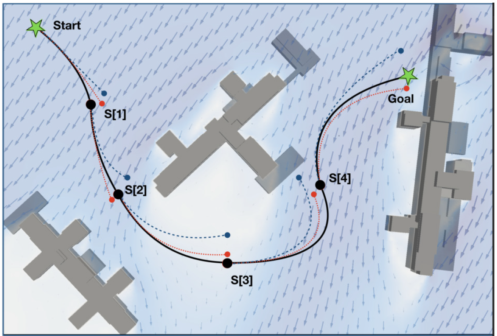
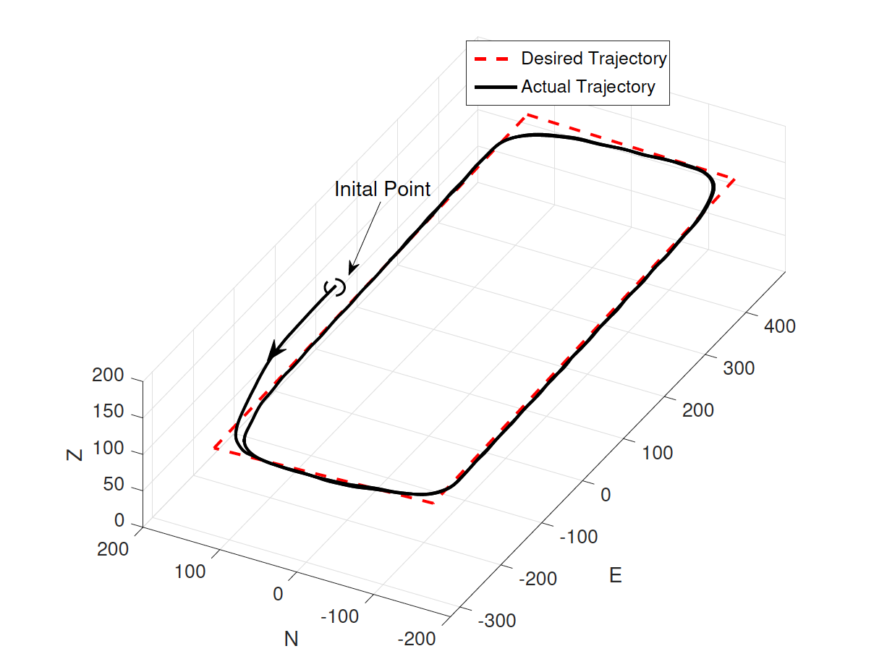
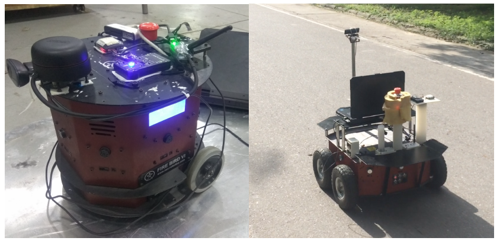
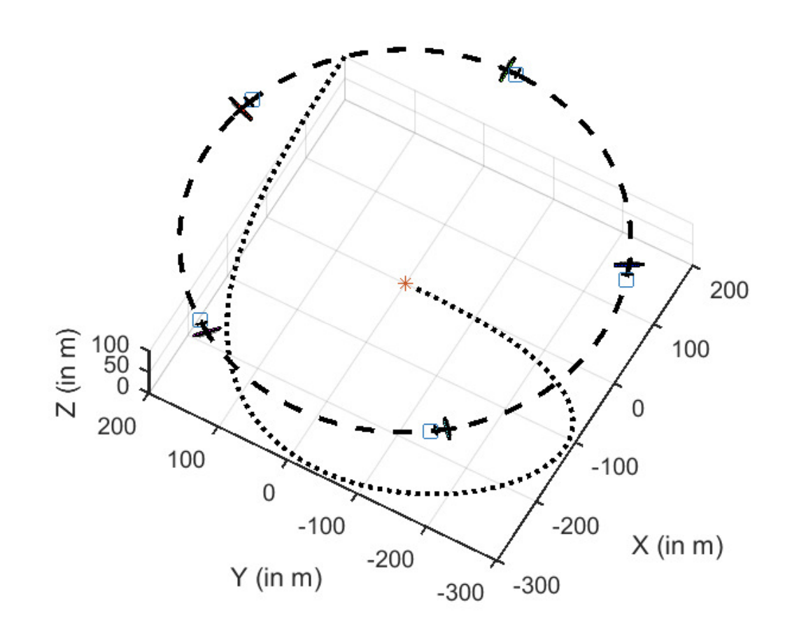

Publications
For a full list, please visit Google Scholar.-
AmeliaTF: A Large Model and Dataset for Airport Surface Movement Forecasting
Patrikar, Jay*; Navarro, Ingrid*; Ortega, Pablo*; Wang, Haichuan; Ye, Zelin; Park, Jong Hoon; Oh, Jean; Scherer, Sebastian
AIAA AVIATION FORUM AND ASCEND 2024 [Best Paper Award]
PDF -
Pegasus simulator: An isaac sim framework for multiple aerial vehicles simulation
Jacinto, Marcelo; Pinto, João; Patrikar, Jay; Keller, John; Cunha, Rita; Scherer, Sebastian; Pascoal, António
International Conference on Unmanned Aircraft Systems (ICUAS) 2024
-
SoRTS: Learned Tree Search for Long Horizon Social Robot Navigation
Patrikar, Jay*; Navarro, Ingrid*; Dantas, Joao PA; Baijal, Rohan; Higgins, Ian; Scherer, Sebastian; Oh, Jean
IEEE Robotics and Automation Letters 2024
PDF -
Toward General-Purpose Robots via Foundation Models: A Survey and Meta-Analysis
Hu, Yafei; Xie, Quanting; Jain, Vidhi; Francis, Jonathan; Patrikar, Jay; Keetha, Nikhil; Kim, Seungchan; Xie, Yaqi; Zhang, Tianyi; Zhao, Shibo; Chong, Yu Quan; Wang, Chen; Sycara, Katia; Johnson-Roberson, Matthew; Batra, Dhruv; Wang, Xiaolong; Scherer, Sebastian; Kira, Zsolt; Xia, Fei; Bisk, Yonatan
Preprint (ArXiv) 2023
PDF -
Follow the rules: Online signal temporal logic tree search for guided imitation learning in stochastic domains
Patrikar, Jay*; Aloor, Jasmine Jerry*; Kapoor, Parv; Oh, Jean; Scherer, Sebastian
IEEE International Conference on Robotics and Automation (ICRA) 2023
PDF -
AirTrack: Onboard deep learning framework for long-range aircraft detection and tracking
Ghosh, Sourish; Patrikar, Jay; Moon, Brady; Hamidi, Milad Moghassem; Scherer, Sebastian
2023 IEEE International Conference on Robotics and Automation (ICRA) 2023
PDF -
Challenges in Close-Proximity Safe and Seamless Operation of Manned and Unmanned Aircraft in Shared Airspace
Patrikar, Jay; Dantas, Joao P. A.; Ghosh, Sourish; Kapoor, Parv; Higgins, Ian; Aloor, Jasmine J.; Navarro, Ingrid; Sun, Jimin; Stoler, Ben; Hamidi, Milad; Baijal, Rohan; Moon, Brady; Oh, Jean; Scherer, Sebastian
International Conference on Robotics and Automation (ICRA) [Workshop] 2022
PDF -
Quantifying the Effect of Weather on Advanced Air Mobility Operations
Sharma, Ashima; Patrikar, Jay; Moon, Brady; Scherer, Sebastian; Samaras, Constantine
Findings 2022
PDF -
Drone flight data reveal energy and greenhouse gas emissions savings for very small package delivery
Rodrigues, Thiago A.; Patrikar, Jay; Oliveira, Natalia L.; Matthews, H. Scott; Scherer, Sebastian; Samaras, Constantine
Patterns 2022
PDF -
Predicting like a pilot: Dataset and method to predict socially-aware aircraft trajectories in non-towered terminal airspace
Patrikar, Jay; Moon, Brady; Oh, Jean; Scherer, Sebastian
International Conference on Robotics and Automation (ICRA) 2022
PDF -
Adaptive Safety Margin Estimation for Safe Real-Time Replanning under Time-Varying Disturbance
Ho, Cherie; Patrikar, Jay; Bonatti, Rogerio; Scherer, Sebastian
2021
PDF -
In-flight positional and energy use data set of a DJI Matrice 100 quadcopter for small package delivery
Rodrigues, Thiago A.; Patrikar, Jay; Choudhry, Arnav; Feldgoise, Jacob; Arcot, Vaibhav; Gahlaut, Aradhana; Lau, Sophia; Moon, Brady; Wagner, Bastian; Matthews, H. Scott
Scientific Data 2021
PDF -
Cvar-based flight energy risk assessment for multirotor uavs using a deep energy model
Choudhry, Arnav; Moon, Brady; Patrikar, Jay; Samaras, Constantine; Scherer, Sebastian
IEEE International Conference on Robotics and Automation (ICRA) 2021
PDF -
Wind and the city: Utilizing uav-based in-situ measurements for estimating urban wind fields
Patrikar, Jay; Moon, Brady G.; Scherer, Sebastian
IEEE/RSJ International Conference on Intelligent Robots and Systems (IROS) 2020
PDF -
Real-time motion planning of curvature continuous trajectories for urban UAV operations in wind
Patrikar, Jay; Dugar, Vishal; Arcot, Vaibhav; Scherer, Sebastian
2020 International Conference on Unmanned Aircraft Systems (ICUAS) 2020
PDF -
Nested saturation based guidance law for unmanned aerial vehicles
Patrikar, Jay; Makkapati, Venkata Ramana; Pattanaik, Anay; Parwana, Hardik; Kothari, Mangal
Journal of Dynamic Systems, Measurement, and Control 2019
PDF -
MARAAL: A low altitude long endurance solar powered UAV for surveillance and mapping applications
Dwivedi, Vijay Shankar; Patrikar, Jay; Addamane, Amulya; Ghosh, A. K.
2018 23rd International Conference on Methods & Models in Automation & Robotics (MMAR) 2018
PDF -
Convolutional neural network based sensors for mobile robot relocalization
Sinha, Harsh; Patrikar, Jay; Dhekane, Eeshan Gunesh; Pandey, Gaurav; Kothari, Mangal
2018 23rd International Conference on Methods & Models in Automation & Robotics (MMAR) 2018
PDF -
A Novel Fully Quaternion based Nonlinear Attitude and Position Controller
Parwana, Hardik; Patrikar, Jay S.; Kothari, Mangal
2018 AIAA Guidance, Navigation, and Control Conference 2018
PDF -
A low-cost tilt-augmented quadrotor helicopter: Modeling and control
Bhargavapuri, Mahathi; Patrikar, Jay; Sahoo, Soumya Ranjan; Kothari, Mangal
2018 international conference on unmanned aircraft systems (ICUAS) 2018
PDF
2024
2023
2022
2021
2020
2019

Sequential Auto-Landing of Multiple UAVs using Control
Constrained Path Following
Patrikar, Jay; Makkapati, Venkata Ramana; Kothari, Mangal
AIAA Scitech Forum 2019
PDF
Patrikar, Jay; Makkapati, Venkata Ramana; Kothari, Mangal
AIAA Scitech Forum 2019
2018
Theses
-
 Wind-Field Estimation and Curvature Continuous Path Planning for Low Altitude Urban Aerial Mobility
Wind-Field Estimation and Curvature Continuous Path Planning for Low Altitude Urban Aerial Mobility
J. Patrikar
, Master of Science Robotics Thesis. Supervised by Sebastian Scherer
[PDF] Carnegie Mellon University, 2020 -
 A 3D Guidance Law for Path Following
A 3D Guidance Law for Path Following
J. Patrikar
, Master of Technology Thesis. Supervised by Dr Mangal Kothari
Indian Institute of Technology Kanpur, 2018